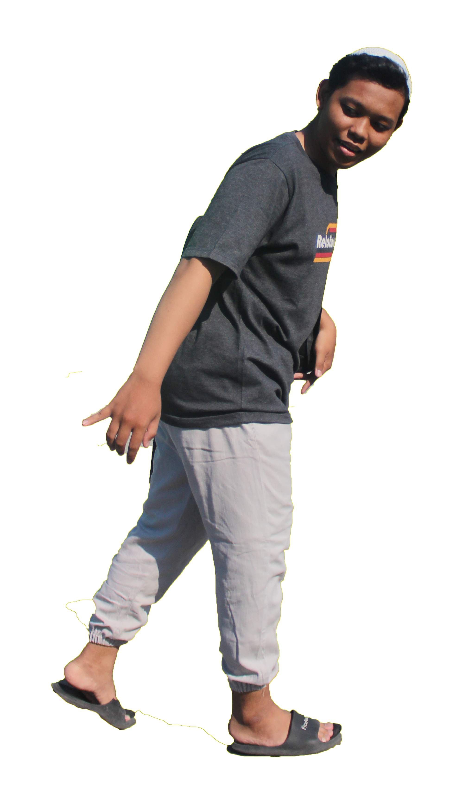

Saat ini, banyak daerah di Indonesia yang membutuhkan bantuan darurat akibat bencana alam seperti banjir, gempa bumi, dan kekeringan. Ribuan warga kehilangan tempat tinggal, akses air bersih, dan kebutuhan pokok lainnya. Bantoo! hadir untuk membantu mereka dengan menggalang donasi dan relawan. Mari bersama-sama meringankan beban mereka.
